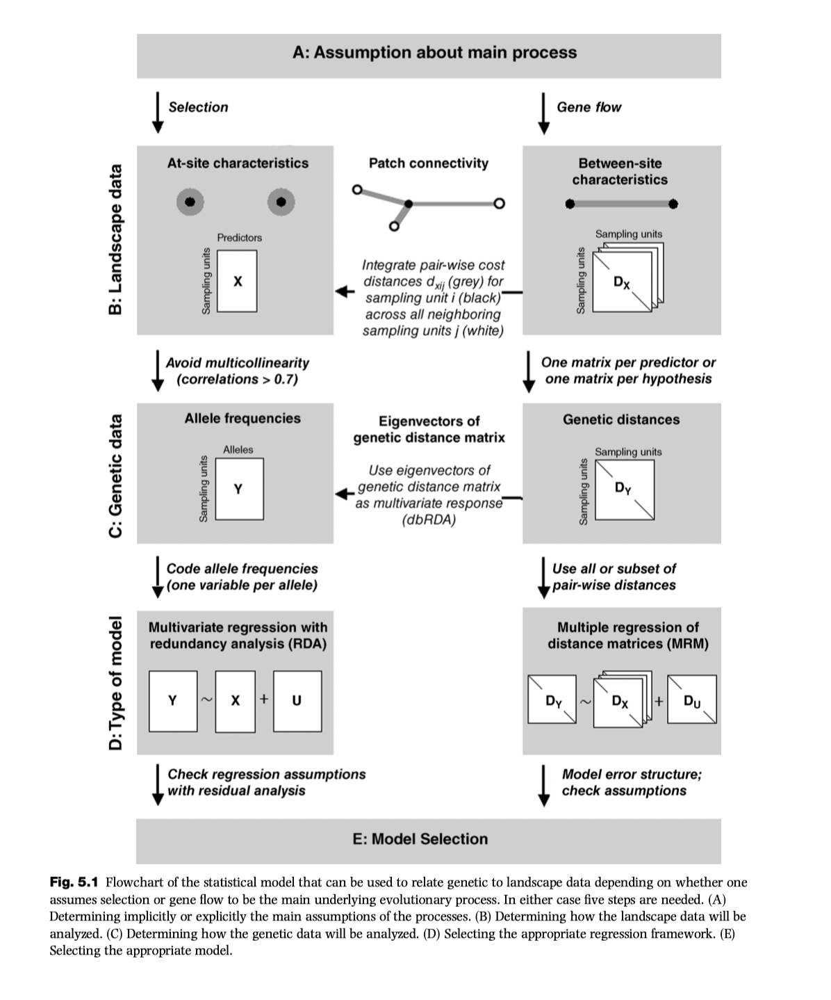

library(terra)
library(vegan)
library(corrplot)
path<-"/home/data/rda/" #if using Amazon server
#path<-"/resources/riverlandsea/exercise_data/rda" #if using Lund server
#Climate data
ras_6190<-terra::rast(paste0(path, "ras_6190.tif"))
names(ras_6190) <- c("AHM","bFFP","CMD","DD_0","DD_18","DD18","DD5","eFFP","EMT", "Eref", "EXT", "FFP", "MAP", "MAR", "MAT", "MCMT", "MSP", "MWMT", "NFFD", "PAS", "PPT_sm", "PPT_wt", "RH", "SHM", "Tave_sm", "Tave_wt", "TD")
# Genetic data
load(paste0(path, "AllFreq.RData"))
load(paste0(path, "Neutral.RData"))
#Sampling sites
Coordinates <- read.table(paste0(path, "PlSeedlots.csv"), sep = ",", header = T, row.names = 1)
# Tidy up the coordinates data and check them
Coordinates <- Coordinates[match(row.names(AllFreq), Coordinates$id2, nomatch = 0),]
colnames(Coordinates) <- c("Population", "Latitude", "Longitude", "Elevation")
Coordinates[1:5,]Intro to RDA as a flexible tool
Instructor: Riginos
RDA as a flexible tool
GEAs: Genotype-by-environment associations
( = environmental associations)
- Genome-wide: related to demographic history, ecological speciation/diversification, isolation by environment

Tutorial on RDAs, GDM, and GF mostly sit in this category.
- Finding loci contribute to heritable genetic variation of selected traits

There is a huge literature on the topic of finding candidate loci for environmental selection that we cannot cover in one week. Population genetic tests of selection such as outlier tests or genomic scans are frequently used. There are also tests of selection that specifically look for associations of individual loci to environmental attributes - often called GEA, genotype-environment association or EAA, environment association analysis - this will be more of our focus given that we are studying landscape genomics. We will come back to this topic on Friday. (Rellstab et al. 2015 and Storfer et al 2018 have good reviews of the various methods if you are looking for further reading on this topic.)
Why RDA (and other multivariate methods)?
RDA allows you to have multiple response variables (loci) and multiple predictors (spatial or environmental attributes)
| Predictive variables | Response variables | Appropriate family of methods * |
|---|---|---|
| One | One | Univariate/Simple regression |
| Many | One | Multiple regression |
| Many | Many | Multivariate regression |
* Note that your genetic data not conform to expectations of parametric methods, including independence of data points
RDA was developed for community ecology data and has been adopted for genetic analyses. In an ecological analysis, there will be various spatial and environmental predictive variables (n sites by m predictive variables) and biological response variables (typically, species abundance organised in n sites by p species). Much of the literature about using ordination and multivariate analyses for environmental analyses will be described as ecological communities).
RDA is an example of methods that focus on nodes, following the schematic below.

A key element of multivariate methods (including the RDA family) is ordination (which falls within the broader descriptor of eigenanalysis).
Ordination
Ordination allows
Compression and visualization of complex data
Flexibility to use distances to describe spatial and biological distances (between populations or individuals)
Flexibility to use allele frequencies (populations) or genotypes (individuals)
Pitfalls on using ordination with genetic data
Missing observations need to be excluded or imputed
Uneven sampling can skew results
Ordination is pattern description: many processes can yield the same patterns
We focus on RDA as a multivariate method because
- it is flexible structure is very useful for landscape genomic data
- it can describe genome-wide patterns
- RDA performs well in genotype-environment-association analyses with low false positives and high true positives
- The regression on one matrix on another.
- Uses a combination of linear regression and PCA.
RDA can address the following questions (citing Capblancq et al. 2021):
1. What environmental/spatial processes drive patterns of genetic variation?
2. What is the genetic basis of local adaptation to the environment?
3. How is adaptive genetic variation distributed across landscapes?
4. What are the impacts of climate and/or landscape change on the distribution of adaptive genetic variation?
RDA takes linear combinations of the explanatory variables (X) and uses them to maximise the variance explained in linear combinations of Y (where X and Y are matrices)
- Keep this linearity in mind: it might not be appropriate for your data
A schematic for how RDA works:

Review of unconstrained ordination (PCA & PCoA)
PCA - principal components analysis
No predictive variables: unconstrained.
Fits a line through the data along an axis that maximizes the variance described by the first PC axis (PC1).
Fits the next line to maximize the variance described for the second PC axis (PC2) where PC1 and PC2 are orthogonal (their variances are not correlated).
And so on.
Note that this is a linear procedure: lines are being fitted.
Eigenvalues (\(\lambda\)) describe the amount of variance explained by each eigenvector (= line = PC axis)
PCoA or PCO: Principal coordinates analysis
same as metric multidimensional scaling
takes pairwise distances (\(d_{ij}\), sometimes called dissimilarities) between points and uses ordination to find axes that maximally explain dissimilarities
PCoA on Euclidean distances is the same as PCA
Sometimes you get negative eigenvalues and have to use a correction
(non metric multidimensional scaling is similar but does not require linear data)
Simple redundancy analysis (constrained ordination)
Example from Capblancq & Forester 2021 - lodgepole pine

- use ~3000 “intergenic” SNPs as neutral loci (genotyped from 50K SNP chip)
- geography, climate and neutral structure are all confounded
Goals
- to undertake a GEA and ignore effect of geography+structure -> possible false positives
- to undertake a GEA and remove geography+structure -> possible false negatives
- There is no clear solution to the problems of false positives and false negatives
Data preparation for RDA
- get environmental variables and scale them to a mean of 0, SD = 1
- categorical predictors can be used as dummy variables (0/1)
- look for colinearity among variables - might remove variables with variance inflation factor greater than ?
Variable selection with forward model building
Build up a predictive model and assists with variable reduction
Test significance of global model (= all variables)
Start with “empty” model (= intercept only) and sequentially add variables
Two stopping criteria to avoid overfitting - end with either criterion
permutation based significance test
adjusted \(R^2\) from global model

partial RDA
Allows independent estimation of sets of variables together with confounded effects caused by collinearity.

Complex models and variance partitioning


Extra topic - dealing with spatial correlation structures
Variety of approaches (to be explored in the computer activities that follow)
Include spatial position as a covariate
Use genetic distances and linearize with PCoA
Use Moran Eigenvector Mapping
Further resources
The absolutely go-to package in R for all ecological eigenanalysis is
vegan. It is very well documented and has excellent vignettes that are well-worth working through.Really nice slide deck that demonstrates some vegan functions with excellent illustrations Intro to vegan
Another great slide deck that runs through RDA and associated vegan functions Redundancy Analysis
Notes developed from:
- Capblancq, T., & Forester, B. R. (2021). Redundancy analysis: A Swiss Army Knife for landscape genomics. Methods in Ecology and Evolution. doi:10.1111/2041-210x.13722
- Rellstab, C., Gugerli, F., Eckert, A. J., Hancock, A. M., & Holderegger, R. (2015). A practical guide to environmental association analysis in landscape genomics. Molecular Ecology, 24 (17), 4348-4370.
- Wang, I. J., & Bradburd, G. S. (2014). Isolation by environment. Molecular Ecology, 23(23), 5649-5662. doi:papers3://publication/doi/10.1111/mec.12938
- Zbinden, Z. D., Douglas, M. R., Chafin, T. K., & Douglas, M. E. (2022). Riverscape community genomics: A comparative analytical approach to identify common drivers of spatial structure. Molecular Ecology, 32, XXX-XXX. doi:10.1111/mec.16806
Computer tutorial - undertaking RDA
Tutorial based on “RDA applications in landscape genomics, by Thibaut Capblancq & Brenna Forester, 2021
The original tutorial can be found on GitHub and shows how to locate and prepare original data files.
This 2023 update uses files that have been compiled and tidied. Much of the code is also updated to make use of sf and terra but some of the code is from the original tutorial. The original code is likely to break soon as support for older spatial packages is removed - you will likely see some warnings.
Original comments by Capblancq & Forester will be indented
like this!
Note that after publication, the authors discovered some minor errors in their code - the updated results (that should match our analyses) can be found here.
Introduction
This tutorial provides code and explanation associated with a review of the different applications of RDA in the field of landscape genomics written by Thibaut Capblancq & Brenna Forester (2021) Redundancy Analysis (RDA): a Swiss-army knife for landscape genomics.
We highly recommend the following book for those interested in RDA: Borcard D, Gillet F, Legendre P (2018) Numerical Ecology with R, 2nd edition.
(Cynthia also endorses the same book)
Datafiles
Climatic variables
The values of 27 bioclimate variables were extracted for all 281 populations from the ClimateNA database for the period 1961-1990, and projections for 2050 and 2080. The projections are based on an ensemble of 15 AOGCMs using CMIP5.
These data have been compiled and projected into the WGS84 reference coordinate system following instructions from Capblancq & Forester and saved as a spatial raster.
ras_6190.tif= present day
Population allele frequencies
Original genetic data and metadata from Mahony et al. 2019, available here. SNP genotypes were derived for individual seedlings from 281 populations of lodgepole pine (Pinus contorta).
Pre-processing:
- Called genotypes were recoded as numeric in order to run RDA using the
veganlibrary. Although some other packages will conduct PCAs and RDAs,veganis recommended. In the numeric formatting, 0 represents an individual homozygous for the major allele, 1 represents a heterozygote, and 2 is homozygous for the alternative allele. - Dataframes were subset to individuals with spatially relevant metadata.
- The mean allele frequency per population (281 populations) was computed
- Loci with missing data from 12 or more populations were excluded
- For population-by-locus combinations with NA values, the values were imputed as the median across all populations (cannot have missing data for PCA and RDA)
- MAFs < 0.05 or > 0.95 were excluded from full SNP data set (but not “neutral” SNPs)
Datafiles
AllFreq: 281 populations, 28658 lociAllFreq_neutral: 281 populations, 3936 lociPlSeedlots.csv: the geographic coordinates of each source population.
Look at all these files using tools and techniques that you have learned. What is in the ras_6190.tif object? (try plotting it)
Some comments from C & F:
An RDA model can either be conducted with individual-based genotypes (0, 1, 2 format) or population-based allele frequencies (ranging from 0 to 1). We decided here to work with allele frequencies for the main reason that several individuals were genotyped at each sampling site (i.e., source population) and experienced the exact same climatic conditions. Plus, the sample sizes varied across populations.
(For full data set) SNPs with a minor allele frequency inferior to 5% were filtered out to avoid giving too much importance to rare alleles when looking for loci associated with environmental variation. Doing so means assuming that local adaptation is driven by consequent changes in adaptive allele frequency along environmental gradients.
(For neutral data set) No filtering on MAF was applied here because small genetic variations are expected to be involved in differentiating neutral genetic groups.
Load libraries and data files
Preparing data for RDA
A series of RDAs will be the heart of the analyses. Before you can do an RDA, however, you need to have all your data prepared and organised. The genetic data are already largely prepared, but some extra work is needed for the environmental data and for estimating neutral population structure.
Extract environmental data from rasters and scale them
#Extract environmental data from the sampling site locations
Env<-extract(ras_6190, Coordinates[,3:2])
# look at your extracted data
Env[1:5,1:8]
Env <- scale(Env, center=TRUE, scale=TRUE) # center=TRUE, scale=TRUE are the defaults for scale()
row.names(Env) <- c(Coordinates$Population)Use “neutral” SNPs to estimate population structure
To account for population structure in some of the following RDA-based procedures we conducted a principal component analysis (PCA) on the set of 3,934 intergenic SNPs and retained the first three PCs as proxy of population evolutionary history.
## Running a PCA on neutral genetic markers
pca <- rda(Neutral[,-1], scale=T) # PCA in vegan uses the rda() call without any predictors
# scale = T will take care of scaling for youExamine the pca object (call pca and summary(pca)) - think about how many PC’s are informative. When you call pca you will see the formula, the “Inertia” and the Eigenvalues for the PC axes. Notice that all the Inertia is unconstrained. Later you will compare this to the full RDA output. Divide the Eigenvalue of PC1 but the total Inertia: this will be percent of variance explained by PC1. The “Species scores” are your column variables, which are loci in this case. The “Site scores” are row variables or populations. The values are loadings, which enable you to plot loci or populations in PC space.
If this were my data and analysis, I would plot the PCA at this point and make sure it all made sense.
biplot(pca, choices=c(1,2), scaling = "symmetric", type= c("points", "text"))What I like to see in a pca is balanced clouds of points. If there is very little population structure, you might see one big cloud of points. If you have substantial structuring, there could be multiple clouds of points. Smears along a single axis (as we see here) are a bit worrisome especially if they do not make geographical sense. Another attribute to be aware of is that imputing allele frequencies can pull values to the middle. For the purposes of this tutorial, we will just continue, but in a real analysis I would try to understand my data at this point and make sure that there are no odd dynamics that might influence later analyses.
People often use screeplots to look at variance and decide on the number of PCs to keep.
# look at screeplot to decide importance
screeplot(pca, type = "barplot", npcs=10, main="PCA Eigenvalues")Based on the screeplot, two or three PCs would be a reasonable set to retain as a proxy for neutral population structure in downstream analyses. In this case, we decided to keep the first three PCs.
Values from these first three PCs can now be extracted. It can be very useful to construct a dataframe containing all the spatial predictors. That’s the strategy that C & F follow:
PCs <- scores(pca, choices=c(1:3), display="sites", scaling=0)
PopStruct <- data.frame(Population = Neutral[,1], PCs)
colnames(PopStruct) <- c("Population", "PC1", "PC2", "PC3")
#check the object
PopStruct[1:5,]
## Table gathering all variables inlcuding environment
Variables <- data.frame(Coordinates, PopStruct[,-1], Env) #original scripts include traits - we are ignoring those for now
Variables[1:5,]Note that PC eigenvectors will already be scaled. You can test this using sum(PopStruct$PC1). There might be a small value due to rounding error but it will be very small.
Building a full RDA model for environmental variables with forward selection
Forward selection starts from a “null” model where the response is explained only by an intercept. Variables are then added to the model one by one to try to reach the amount of variance explained by a “full” model (i.e., model including all the explanatory variables), while limiting the amount of redundancy among included variables.
Whether forward selection is the best approach or not is debatable, but it is the most common procedure for dealing with multiple variables. To do this, you first build the intercept only model and then define a full model.
## Null model
RDA0 <- rda(AllFreq ~ 1, Variables)
## Full model - this will take a bit of time to run
RDAfull <- rda(AllFreq ~ AHM + bFFP + CMD + DD_0 + DD_18 + DD18 + DD5 + eFFP + EMT + Eref + EXT + FFP + MAP + MAR + MAT + MCMT + MSP + MWMT + NFFD + PAS + PPT_sm + PPT_wt + RH + SHM + Tave_sm + Tave_wt + TD, Variables)Examine the structure of RDA0 by just typing RDA0 and also summary(RDA0). There is a lot of information but the structure is essentially a PCA, since we did not define any explanatory variables. As before, the “Species scores” are your column variables, which are loci in this case. The “Site scores” are row variables or populations.
Once you have looked at RDA0, take a look at RDAfull. Now you will see constrained inertia that represents the variance explained by your predictor variables. (Notice that most variance remains unconstrained, this is quite common). Remember that the predictor variables have now been ordinated as RDA eigenvectors where each RDA axis is orthogonal to the others. The eigenvalues represent how much variance in response variables (allele frequencies) is predicted by that eigenvector, e.g., RDA1 predicts 29.4/578 percent of the variance in allele frequencies.
The last table in summary(RDAfull) shows how the different environmental variables load onto each RDA axis.
To make a quick plot of your RDA, now use ordiplot. This will make a biplot that combines your populations (points) and predictor variables (arrows).
ordiplot(RDAfull)The vegan package is very well documented and it is worth spending time learning some of the options if you are going to be using ordination in your toolbox of analyses.
To conduct the selection procedure we used the ordiR2step function of the package vegan and the following stopping criteria: variable significance of p < 0.01 using 1000 permutations, and the adjusted R2 of the global model.
Because this command will take a long time to run, I suggest that you start it and watch what it is doing, but I have saved the output mod for you to import, so you can stop the process to speed things up. In
Interrupt the processing for the sake of time and load the output of the full ordiR2step output after you see the initial round of results:
## Stepwise procedure with ordiR2step function
mod <- ordiR2step(RDA0, RDAfull, Pin = 0.01, R2permutations = 1000, R2scope = T) #this will take time to run - about 30 min on my laptop
# load the output
load(paste0(path, "mod.Rdata"))
# if you can't load this file, don't worry about it. Read below and move on.Here is what my screen output looks like when running ordiR2step. It starts by evaluating which of the predictors you supplied explains the greatest amount of variance (MAR) in this case. Once it adds one predictor, it will assess which of the remaining variables should be added (EMT, in this case). It evaluates whether the model fit improves substantially with each variable using the adjusted R2. See ?ordiR2step for more information.
Step: R2.adj= 0
Call: AllFreq ~ 1
R2.adjusted
<All variables> 0.081012244
+ MAR 0.022167460
+ EMT 0.019112369
+ PPT_wt 0.016854043
+ Tave_wt 0.016052084
+ RH 0.015642759
+ MCMT 0.015420933
+ eFFP 0.015105975
+ DD_0 0.014822828
+ NFFD 0.014717984
+ PPT_sm 0.014492755
+ TD 0.014274591
+ MAP 0.013217792
+ DD_18 0.012420377
+ MAT 0.012363359
+ MSP 0.010931973
+ FFP 0.010056901
+ CMD 0.009675979
+ SHM 0.008713027
+ Eref 0.007020628
+ bFFP 0.006082542
+ AHM 0.006006697
+ EXT 0.005173569
+ DD5 0.004382995
+ DD18 0.004240597
+ MWMT 0.003519758
+ Tave_sm 0.003343331
+ PAS 0.002501768
<none> 0.000000000
Df AIC F Pr(>F)
+ MAR 1 1782.8 7.3476 0.002 **
---
Signif. codes: 0 ‘***’ 0.001 ‘**’ 0.01 ‘*’ 0.05 ‘.’ 0.1 ‘ ’ 1
Step: R2.adj= 0.02216746
Call: AllFreq ~ MAR
R2.adjusted
<All variables> 0.08101224
+ EMT 0.04451733
+ TD 0.04380193
(and so on)As before, examine the mod object in detail. How much variance does RDA1 explain? Is RDA1 dominated by a single environmental variable or spread among variables?
mod$anova will give you most of the output shown in Table 1 from C & F. You would just need to do some subtraction to get the R2 for each term - for example, EMT = 0.044517-0.022167 = 0.02235.
> mod$anova
R2.adj Df AIC F Pr(>F)
+ MAR 0.022167 1 1782.8 7.3476 0.002 **
+ EMT 0.044517 1 1777.2 7.5261 0.002 **
+ MWMT 0.054435 1 1775.3 3.9158 0.002 **
+ CMD 0.063109 1 1773.7 3.5645 0.002 **
+ Tave_wt 0.067203 1 1773.4 2.2115 0.002 **
+ DD_18 0.070171 1 1773.5 1.8775 0.002 **
+ MAP 0.071918 1 1774.0 1.5159 0.002 **
+ Eref 0.073516 1 1774.5 1.4708 0.002 **
+ PAS 0.075318 1 1774.9 1.5302 0.002 **
<All variables> 0.081012
---
Signif. codes: 0 ‘***’ 0.001 ‘**’ 0.01 ‘*’ 0.05 ‘.’ 0.1 ‘ ’ 1(And you don’t need to report all those decimal places, IMO)
From C & F:
In total, nine of the 27 bioclimate variables were selected: MAR, EMT, MWMT, CMD, Tave_wt, DD_18, MAP, Eref and PAS.
Notes on interpretation and best practices: We remind users that this predictive approach to variable selection optimizes the variance explained, but does not necessarily identify the ecological or mechanistic drivers of genetic variation. Additionally, pairwise predictor correlations can be very high, e.g., among seasonal calculations of temperature or precipitation. While one variable may maximize variance explained, it may be another, correlated variable, potentially even unmeasured, that is the mechanistic driver of variation. The ubiquitous nature of environmental correlation means that it is critical to carefully investigate selected variables but also avoid overinterpretation of variable importance in downstream analyses unless mechanistic data support observed relationships.
Variance partitioning of the RDA
Variance partitioning with partial RDA (pRDA) can identify the contribution of different factors to reducing gene flow and triggering genetic divergence among populations. We apply pRDA-based variance partitioning to the lodgepole pine data to decompose the contribution of climate, neutral population structure, and geography in explaining genetic variation. We used three sets of variables: 1) the nine selected bioclimate variables (‘clim’); 2) three proxies of neutral genetic structure (population scores along the first three axes of a genetic PCA conducted on the 3,934 neutral loci; ‘struct’); and 3) population coordinates (longitude and latitude) to characterize geographic variation (‘geog’).
Full model
Build the full model with population structure, geography, and environmental variables
## Full model
pRDAfull <- rda(AllFreq ~ PC1 + PC2 + PC3 + Longitude + Latitude + MAR + EMT + MWMT + CMD + Tave_wt + DD_18 + MAP + Eref + PAS, Variables)
RsquareAdj(pRDAfull)
#anova(pRDAfull) this can take a long time to run - I have saved an output below... it is giving you the significance of the whole model using permutation > anova(pRDAfull)
Permutation test for rda under reduced model
Permutation: free
Number of permutations: 999
Model: rda(formula = AllFreq ~ PC1 + PC2 + PC3 + Longitude + Latitude + MAR + EMT + MWMT + CMD + Tave_wt + DD_18 + MAP + Eref + PAS, data = Variables)
Df Variance F Pr(>F)
Model 14 84.62 3.2586 0.001 ***
Residual 266 493.41
---
Signif. codes: 0 ‘***’ 0.001 ‘**’ 0.01 ‘*’ 0.05 ‘.’ 0.1 ‘ ’ 1These values and the subsequent models correspond to Table 2. (There might be some minor discrepancies due to data preparation and permutation based tests.) For some reason, in Table 2, R2 rather than adjusted R2 is reported. You should use adjusted R2: it is penalized by the number of predictor variables (somewhat analogous to AIC).
Climate model
The climate model is the first of a series of conditioned models. This structure estimates the variance of constrained variables, given conditioning on series of other variables. In this instance, the model is exploring the effect of environmental predictors conditioned upon geography and neutral population structure.
Conditioned models are also called partial RDAs. The conditioned variables show up in the regression model following the “|”: Climate model is \(F \sim clim | geog + struct)\)
## Pure climate model
pRDAclim <- rda(AllFreq ~ MAR + EMT + MWMT + CMD + Tave_wt + DD_18 + MAP + Eref + PAS + Condition(Longitude + Latitude + PC1 + PC2 + PC3), Variables)
RsquareAdj(pRDAclim)
# can skip to save time
#anova(pRDAclim)Take a look at pRDAclim and you will see how Inertia is partitioned among various categories. Information from this model is feeding into the second row of Table 2.
- Conditional = the amount of variance explained by conditional variables and removed
- Constrained = amount of variance uniquely explained by explanatory variables
- Unconstrained = rest of the variance that is unexplained
Population structure model
Similarly a partial RDA can be undertaken for population structure…
## Pure neutral population structure model
pRDAstruct <- rda(AllFreq ~ PC1 + PC2 + PC3 + Condition(Longitude + Latitude + MAR + EMT + MWMT + CMD + Tave_wt + DD_18 + MAP + Eref + PAS), Variables)
RsquareAdj(pRDAstruct)
#anova(pRDAstruct)Geography
And another pRDA for geography
##Pure geography model
pRDAgeog <- rda(AllFreq ~ Longitude + Latitude + Condition(MAR + EMT + MWMT + CMD + Tave_wt + DD_18 + MAP + Eref + PAS + PC1 + PC2 + PC3), Variables)
RsquareAdj(pRDAgeog)
#anova(pRDAgeog)To replicate Table 2 in the manuscript, we extract the following from the above results:
- Total inertia (aka variance)
- Constrained inertia
- Proportion of variance explained by constraints
- Model R^2^
- Model p-value
For the “confounded” row, this should be the full model minus the sum of the partial models, for example, the proportion of explainable variance is 1 - (0.27+0.22+0.05). You can dig into this further with the function varpart().
Note: It is interesting to look at the degree of correlation among variables using a correlogram:
#explore other options
corrplot(cor(Variables[, c("PC1","PC2","PC3","Longitude","Latitude","MAR","EMT","MWMT","CMD","Tave_wt","DD_18","MAP","Eref","PAS")]), type="upper")Notes on interpretation and best practices: In this case, the largest proportion of genetic variance could not be uniquely attributed to any of the three sets of predictors, a common occurrence given the ubiquitous nature of spatial autocorrelation in environmental and genetic data sets. This confounded effect reflects a high degree of collinearity among explanatory variables. This is critical information given that most landscape genomic studies look for correlation between climatic and genetic variation (i.e., GEA) and either assume no collinearity or, on the contrary, totally remove this commonly explained variation. In the first case, GEA detections could potentially be subject to high false positive rates, while in the latter case detections might show high false negative rates. Selecting an appropriate approach to account for demographic history and geographic distance is of major importance when searching for selection in the genome. Variance partitioning can be a useful step to explore the (statistical) association among available descriptors, to better understand the covariation of environmental and genetic gradients, and to determine how much overall genetic variation is shaped by environmental, geographic, and demographic factors before conducting further landscape genomics study.
Another way to look for correlations is to use variance inflation factors, where the square root of the value > 2 indicates multicollinearity.
sqrt(vif.cca(pRDAfull))(Not really a good sign!)
Other important topics (not from C&F tutorial)
The amazing flexibility of RDA
Populations or individuals
The above tutorial was conducted on populations, but if your sampling is at the individual level, you can use RDA for individual based analyses. Note that this assumes that each individual has a unique set of predictor variables. You would center and scale your genotype data as with population level analyses.
Using link based predictors
In a standard analyses as conducted in C&F’s tutorial, the predictive variables have site or node based attributes: that is, a one-to-one relationship between populations (or individuals) and predictors. Sometimes, however, you might be focused on link attributes such as the geographic distance between sites.
If this is the case, you should organise your distances as a square matrix with dimensions equal to the number of populations. Principal coordinates analysis (PCoA) = metric multidimensional scaling can then be used to undertake ordination based on these pairwise distances. You will then need to decide how many axis of the PCoA to use as your predictors in the RDA. For example, say you wanted to get geographic distances based on projected locations. If this is the case, PCoA1 and PCoA2 are likely to be sufficient to capture most of the variation. Note that a PCoA on Euclidean distances is the same as a PCA.
The procedure of incorporating PCoA axes from a distance matrix in RDA is sometimes called distance-based redundancy analyses, dbRDA.
Moran Eigenvector Maps
As you are aware, spatial autocorrelation structures are common in spatial data and can arise through many processes. In the tutorial from C&F, spatial autocorrelation is dealt with (sort of) by using latitude and longitude as covariates. A more sophisticated way of allowing for spatial autocorrelation (and testing for it) is to use Moran Eigenvector Maps (MEMs). This approach derives orthogonal vectors of possible spatial autocorrelation structures. These can be included as predictors in an RDA (or other analyses).
Some functions return both positive and negative MEMs. The total number of MEMs are equal to the number of popultions with the first half being positive - typically we only focus on the positive MEMs. The MEMs with lower numbers (1, 2, 3 etc) describe larger spatial patterns and higher numbers are more particulate.
The code below draws upon adespatial and spdep that were developed by authors involved in the key theory related to MEMs. These packages, however, are a bit out of date and so in the future you will want to see if there are updates.
The first bit of code shows MEMs for a simple spatial grid so you can build up your inference. The second bit of code shows how you would find MEMs for the irregular lodgepole pine data.
library(ade4)
library(adespatial)
library(spdep)
library(adegraphics)
# Demonstration of MEMs on a grid
xygrid <- expand.grid(x = 1:10, y = 1:8)
plot(xygrid)
xygrid.mem<-dbmem(xygrid,store.listw = TRUE)
plot(xygrid.mem, SpORcoords = xygrid)
# Looking at MEMS for lodgepole pine data
pine.mem<-dbmem(Coordinates[,c(2,3)], MEM.autocor = "positive", store.listw = TRUE)
plot(pine.mem, SpORcoords = Coordinates[,c(2,3)]) #This is a horribly ugly plot. (If anyone figures out how to make this look better, please post in slack or email me and you will become famous in future tutorials - you can extract the MEM values from pine.mem and use them as a color palette and then just place them in xy space from Coodinates.
You could play with using the first few MEMs in modified RDAs of the pine data. Remove longitude and latitude if you do this.
If you plan to use MEMs in your own research, you will want to investigate much further. Right now, this code demonstrate how you can make them so you have a basic understanding of what they are when you read about MEMs in papers. A good place to start would be by following the adespatial tutorial.
Points for class discussion
What are your thoughts on the filtering and preprocessing of genetic data? Could there be unintentional biases?
RDAs can be undertaken on either population allele frequencies or individual genotypes. When would it be strategic to pick one over the other? Are there any special considerations with either data type?
Notice that this tutorial does not look for correlations among environmental variables. What arguments can you make for or against reducing your environmental variables using approaches like variance inflation factors? Would you look at correlations across your whole landscape or across your study sites only?
What do you think about exploring environmental variables first and then building a model with population structure, geopositioning, and environmental variables?